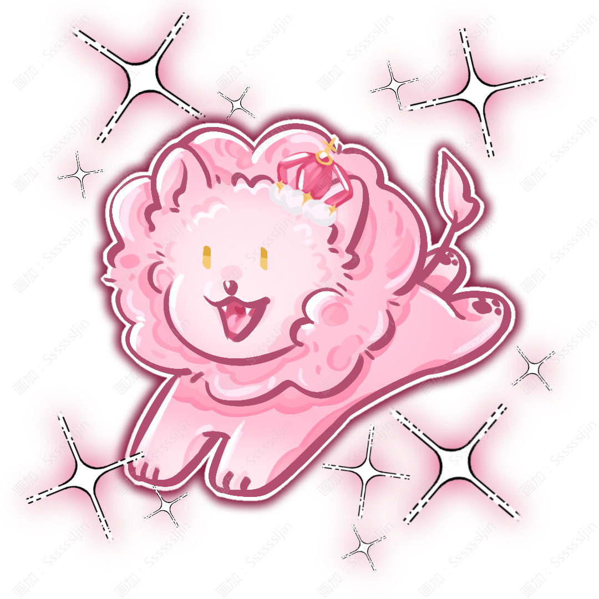

✦ @ Sljin ✦
她不是因为想成为女王，才戴上王冠。
而是因为所有能保护她的人，都已经不在了。
而是因为所有能保护她的人，都已经不在了。
基本資料
姓名：寓幽 · 薇拉 · 艾靈
英文：Yuyou · Vera · Ailing
種族：人类 × 灵兽混血
性別：女
生日：1月10日
外貌
身高：162cm
體重：52kg
爱心形呆毛
粉色渐变白色的头发
金黄色瞳孔
性格
温柔、善良、坚韧。
从小被宠爱长大，却从未因此任性。面对他人时，总是愿意理解和包容。经历战争后，她变得更加沉稳、坚强，将情绪藏在心底，即使背负痛苦，也会选择独自承担。
身份
艾尔德利亚和瑟兰迪斯公主
艾尔德利亚继承人（后为女王）
登基时：19岁
能力
武器：剑
属性：光
灵契
狮子
一只跟随瑟兰迪斯很久的灵兽
喜好
甜点
理想
希望可以游历世界，开一家属于自己的甜品店。
属性面板
力量：6
体力：6
智力：9
魅力：9
幸运：10
元素
星星